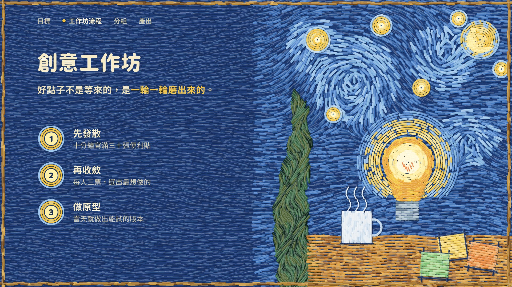
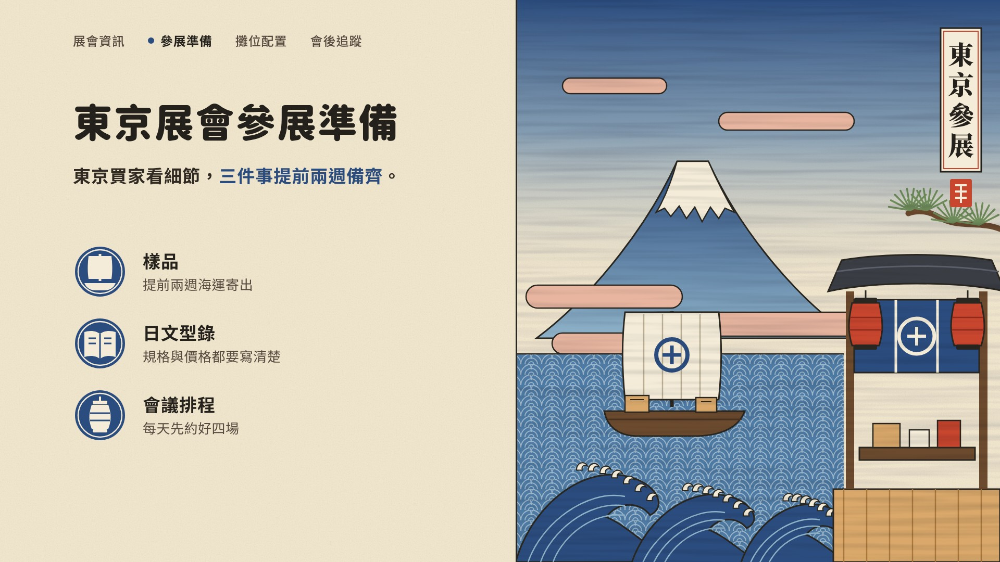

融合規則示範：四張重排（左：原版，右：新版）
依使用者的三個建議：全頁同源底紋與筆觸、物件與文字結構互動、高紋理畫風用內生題箋。版面依內容：步驟用 C，高紋理的條列用 B。
埃及壁畫 C石灰岩鋪滿全頁；四層分欄就是四個步驟，色帶當分隔，象形欄連起文字與畫面
 原版：左文右圖，壁畫被框成一幅畫
原版：左文右圖，壁畫被框成一幅畫 新版
新版8bit 像素 C天空與地面鋪滿全頁；每一階就是一關，說明掛在各自的台階上方
 原版：條列在左、台階在右，靠數字對照
原版：條列在左、台階在右，靠數字對照 新版
新版梵谷筆觸 B筆觸鋪滿全頁；文字寫在一層微半透明的釉上，底下的星空仍看得見；分隔線也是筆觸

原版：左半邊刻意壓暗、筆觸變平，像切出來的空白區 新版
新版浮世繪 B版畫鋪滿全頁；文字寫在畫裡的和紙題箋上，條目之間是印刷的雙線，浪花打上題箋一角

原版：右半邊是一張直切的版畫 新版
新版